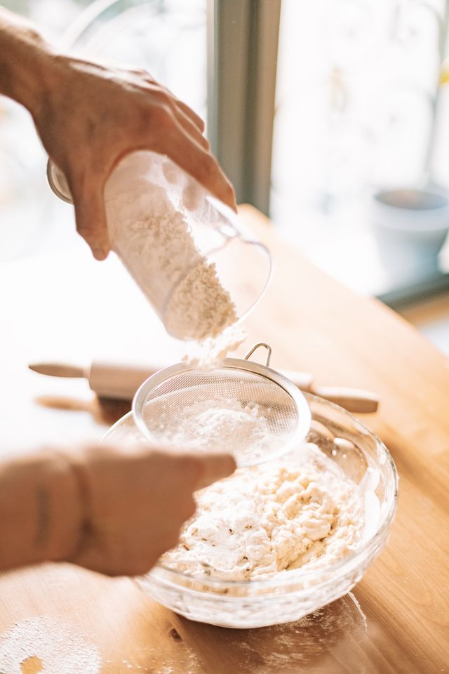

A arte praticada na cozinha, a culinária
A culinária vai muito além do simples ato de preparar alimentos; ela é uma forma de expressão cultural, afeto e criatividade. Cozinhar é misturar tradições ancestrais com técnicas modernas, transformando ingredientes simples em experiências sensoriais inesquecíveis. Seja você um chefe experiente ou alguém que está dando os primeiros passos no fogão, a cozinha é um espaço de descoberta, onde cada tempero conta uma história e cada prato une as pessoas ao redor da mesa.
